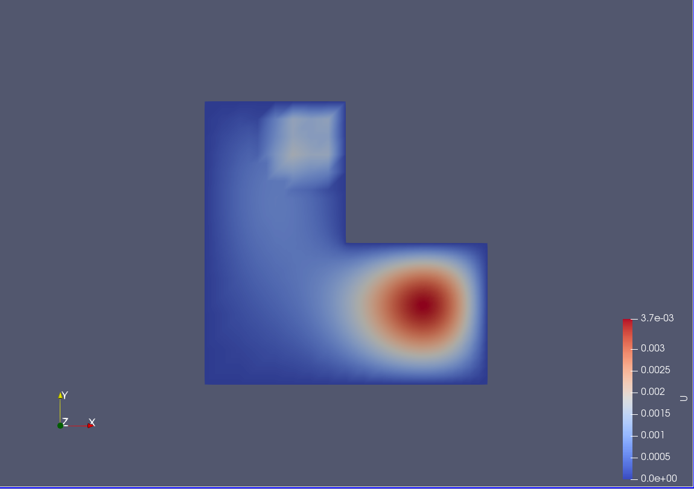
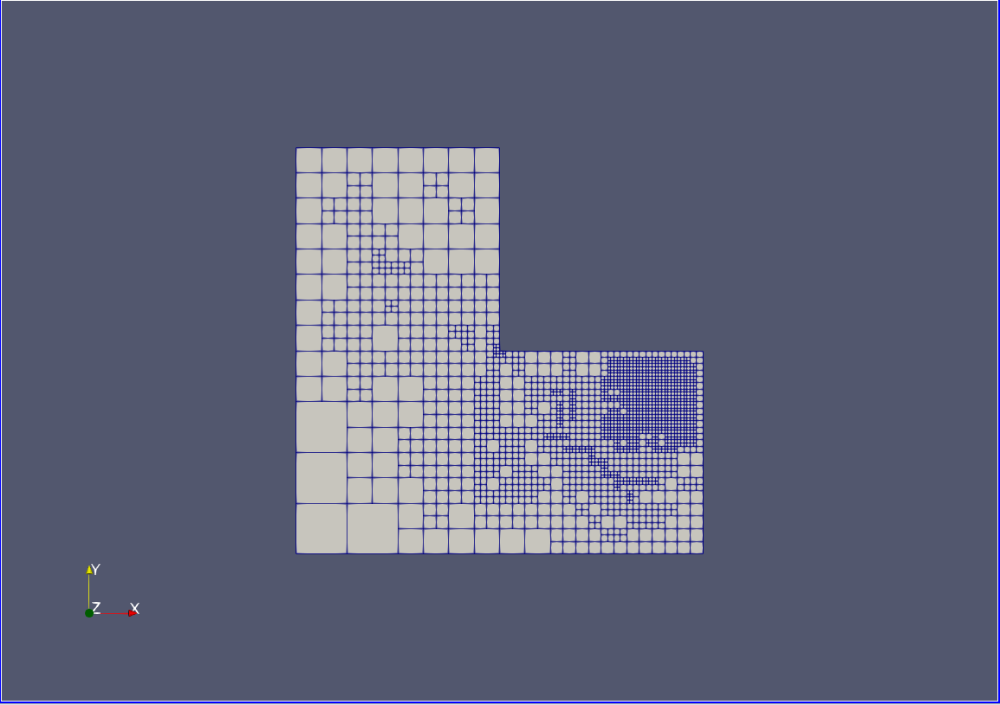
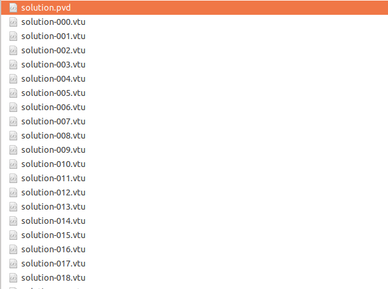
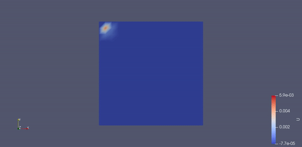

2020.10.29 Step-26 StudyThe step-26 is mainly talking about how deal.ii is doing heat transfer.
We can run the default code and derive the results.
The result:

The mesh:

Now I will go through some the possible extensions thought out by myself.
- Save time-dependent results for Paraview
By default, the output results are a bunch of vtk files, which are very difficult to be visualized in Paraview because a user needs to open them one by one and export results one by one. The reason for that is that the vtk files do not contain time information. And they are separated files for Paraview. However, I found the following code in tutorial step-52, where the output files are vtu files and a pvd file that contains the time information. So basically, when one wants to postprocess the results, he/she only needs to open the pvd file in Paraview and, therefore, all the time steps are read automatically.1
2
3
4
5
6
7
8
9
10
11
12
13
14
15
16
17
18
19
20
21
22
23
24
25
26
27template <int dim>// zzd
void HeatEquation<dim>::output_results(const double time,
const unsigned int time_step) const
{
DataOut<dim> data_out;
data_out.attach_dof_handler(dof_handler);
data_out.add_data_vector(solution, "U");
data_out.build_patches();
data_out.set_flags(DataOutBase::VtkFlags(time, time_step)); // zzd
// data_out.set_flags(DataOutBase::VtkFlags(time, timestep_number));
const std::string filename =
"solution-" + Utilities::int_to_string(time_step, 3) + ".vtu"; //zzd
// "solution-" + Utilities::int_to_string(timestep_number, 3) + ".vtu";
std::ofstream output(filename);
data_out.write_vtu(output); // zzd
// data_out.write_vtk(output);
static std::vector<std::pair<double, std::string>> times_and_names; // zzd
static std::string pvd_filename = "solution.pvd"; // zzd
times_and_names.emplace_back(time, filename);
std::ofstream pvd_output(pvd_filename);
DataOutBase::write_pvd_record(pvd_output,times_and_names);
}
A screenshot of the generated files is depicts as follows:

- Moving circular heat source
The initial problem of step-26 is a L-shape simulation domain under two alternatively flashing heat sources. So I think it is possible to make multiple heat sources alternatively falsh and, accordingly, we can produce a moving heat source in this fashion. The following is an example of this idea.1
2
3
4
5
6
7
8
9
10
11
12
13
14
15
16
17
18
19
20
21
22
23
24
25
26
27
28
29
30
31
32
33
34
35
36
37
38
39
40
41
42
43
44
45
46
47
48
49
50
51template <int dim>
double RightHandSide<dim>::value (const Point<dim> &p,
const unsigned int component) const
{
(void) component;
AssertIndexRange(component, 1);
Assert(dim == 2, ExcNotImplemented());
const double time = this->get_time ();
const double point_within_period =
(time / period - std::floor (
time / period));
if ((point_within_period >= 0.0) && (point_within_period <= 0.2))
{
if (std::pow (p[0] + 0.9, 2.0) + std::pow (p[1] - 0.9, 2.0) <= 0.01)
return 1;
else
return 0;
}
else if ((point_within_period >= 0.2) && (point_within_period <= 0.4))
{
if (std::pow (p[0] + 0.5, 2.0) + std::pow (p[1] - 0.9, 2.0) <= 0.01)
return 1;
else
return 0;
}
else if ((point_within_period >= 0.4) && (point_within_period <= 0.6))
{
if (std::pow (p[0] + 0.1, 2.0) + std::pow (p[1] - 0.9, 2.0) <= 0.01)
return 1;
else
return 0;
}
else if ((point_within_period >= 0.6) && (point_within_period <= 0.8))
{
if (std::pow (p[0] - 0.5, 2.0) + std::pow (p[1] - 0.9, 2.0) <= 0.01)
return 1;
else
return 0;
}
else if ((point_within_period >= 0.8) && (point_within_period <= 1.0))
{
if (std::pow (p[0] - 0.9, 2.0) + std::pow (p[1] - 0.9, 2.0) <= 0.01)
return 1;
else
return 0;
}
else
return 0;
}

Future work:
The FEM information flow control should recieve more attention, such as how exactly the boundary_values are applied on the final linear equations system.
The “friend” and “virtual” in C++ is still not crystal clear and should be further studied.
I don’t understand how the error estimation inequality is derived.

Manifold unclear either.
3D moving heat source.
3D moving heat source with nonlinear material properties.
Mechanical simulation, plasticity
The official tutorial document is as follows,
https://www.dealii.org/current/doxygen/deal.II/step_26.html